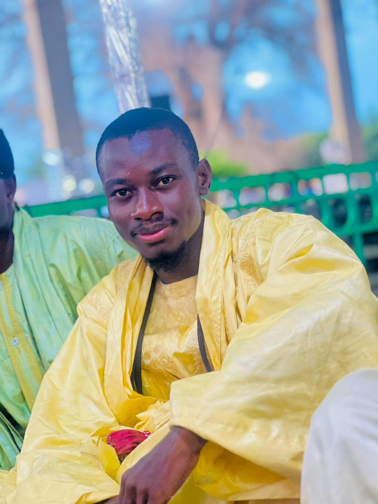
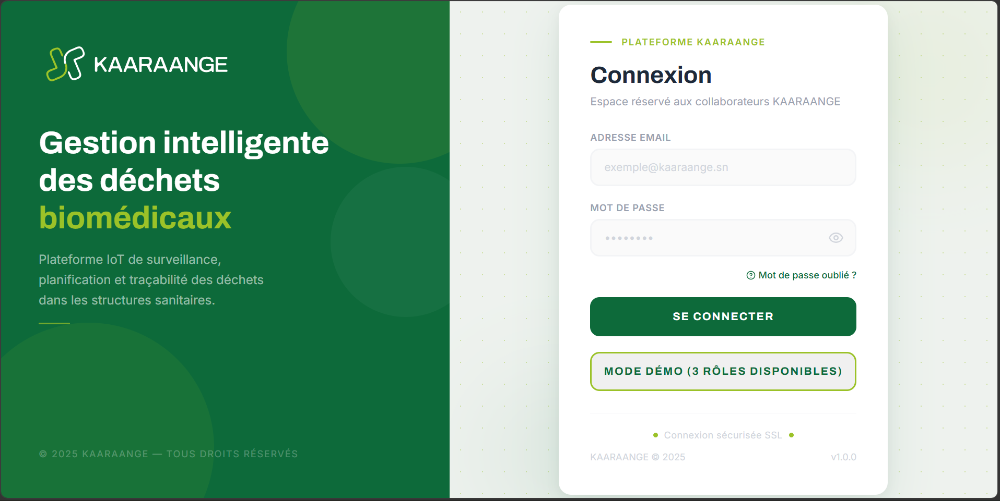
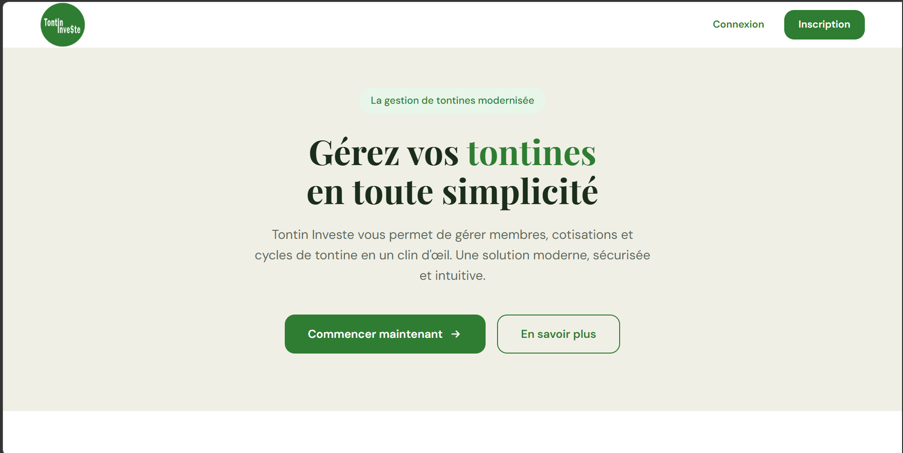
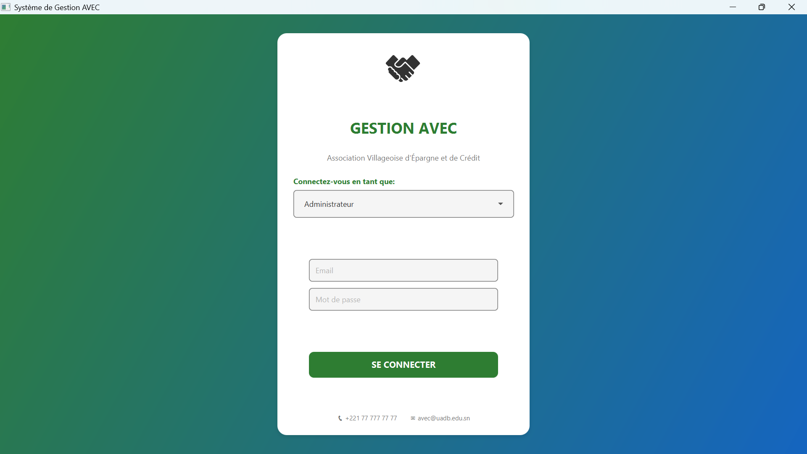

Étudiant en Licence 3 D2A, passionné par le développement d'applications web modernes avec Laravel, Spring Boot, JavaScript et React.

Je suis étudiant en Licence 3 Développement et Administration d'Applications (D2A), passionné par le développement web et le design d'interfaces. J'allie compétences techniques et créativité pour concevoir des applications à la fois performantes, intuitives et esthétiques. Je maîtrise le développement Full Stack avec Laravel, Spring Boot et React, ainsi que les outils de conception UI/UX tels que Figma et Photoshop.
Je développe des applications web modernes avec Laravel, Spring Boot, React et MySQL.
Mon objectif est de devenir développeur Full Stack et de participer à des projets innovants à fort impact.
HTML, CSS, JavaScript, React, jQuery
PHP, Laravel, Java, Spring Boot
MySQL, Oracle
Git, GitHub, Postman, VS Code
Adobe Illustrator, Adobe XD, Adobe Photoshop, Canva, Conception d'interfaces utilisateur, Maquettage et prototypage.

KAARAANGE est une plateforme web intelligente conçue pour la gestion numérique des déchets biomédicaux dans les structures sanitaires. Le projet s'articule autour de trois composantes : des poubelles connectées équipées de capteurs de niveau de remplissage, une plateforme web centralisée accessible aux administrateurs et aux collecteurs partenaires, et une base de données relationnelle garantissant la traçabilité de toutes les opérations.
Spring Boot • React • MySQL • ESP32 • MQTT
Plateforme de gestion de tontines avec suivi des cotisations et des paiements.
Laravel • Bootstrap • MySQL
Projet de gestion des AVEC - Application JavaFX pour la gestion des Associations Villageoises d'Épargne et de Crédit. Solution complète couvrant les 7 modules de formation, la gestion des membres, des prêts et la répartition du capital. Architecture MVC + DAO + Service avec base de données MySQL.
Java 17 • JavaFX • MySQL📧 Email : msow3435@gmail.com
📱 Téléphone : +221 77 705 06 25 & +221 70 959 80 26
💻 GitHub : https://github.com/Imaam-code
🔗 LinkedIn : https://www.linkedin.com/in/malick-sow-094635304